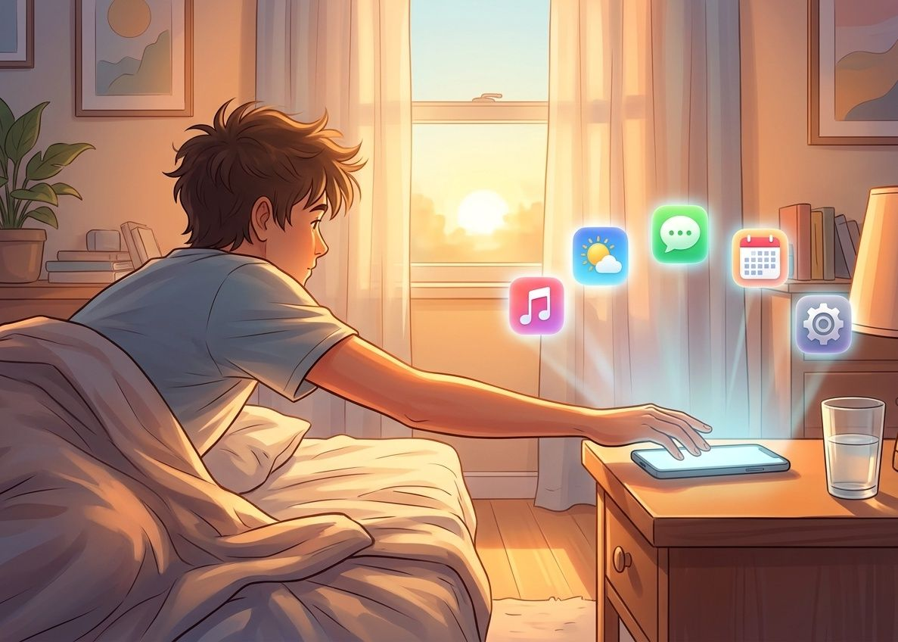

07:00 · Suena la alarma… en un sistema abierto
Tu teléfono arranca. Si es Android, corre sobre un núcleo Linux y sobre AOSP, el proyecto de código abierto de Google. Antes de tomar café, ya usaste open source.
- Linux
- AOSP / Android
Android es el sistema operativo móvil más usado del mundo.
Aquí va tu imagenSugerencia: un teléfono Android, o la mascota de Android.
que-es-1.jpg